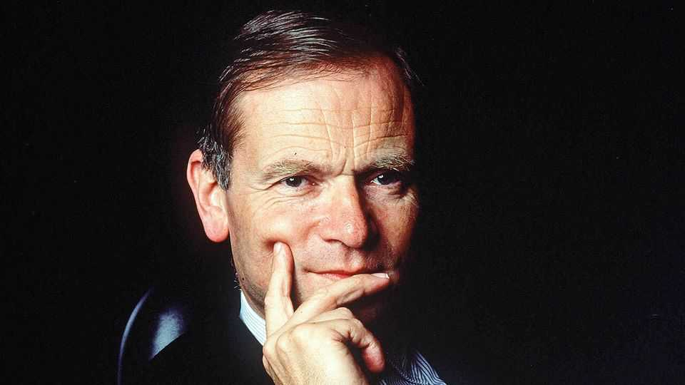

Jeffrey Archer’s career was worthy of his most improbable plots
The bestselling novelist, conman and politician died on October 5th, aged 86

Oct 22nd 2026
“Could it work?” Archer asked himself. “Why on earth not?” his alter ego replied.
He stood in the penthouse living room where, for years, dinners of shepherd’s pie and Krug had been served up to London’s finest. From the floor-to-ceiling windows he stared down at the Shard, the Eye, the Cheese Grater and the Palace of Westminster, all embraced by the gleaming River Thames. Behind him, in the vast lounge, a Picasso and a Monet adorned the walls.
Settling into the overstuffed cream sofa, he felt almost insanely satisfied with his life. Yes, it would be well worth writing up. Rags-to-riches stories were his stock-in-trade, and the riches had come from his own efforts. More than 330m of his 31 page-turner novels had been sold in 114 countries. (The Monet was a bonus from his third, “Kane and Abel”.) There had been seven sets of short stories, three plays and even a Gospel. Not long ago, in India, a beggar boy at a traffic light had tried to sell him “the latest Jeffrey Archer”. “I am the latest Jeffrey Archer!” he had joyfully cried.
Besides all that he had climbed to the heights of British politics, sprinting there as he’d done to set an Oxford record in 1966: 100 yards in under ten seconds, earning him an Athletics Blue. Up and up, from Tory councillor for Havering to MP for Louth in Lincolnshire, to deputy chairman of the Conservative Party, to the House of Lords as Lord Archer of Weston-super-Mare, his childhood home. He served humble fare at his parties to remind himself and his influential guests how far and fast he had come.
Yet it could have been even faster and farther, if not for certain trip-ups on the way.
* * *
The summer sun beat down with unusual heat on the lawns of the Old Vicarage at Grantchester, former residence of the poet Rupert Brooke. There was honey, his own, for tea. Archer was in the thatched summerhouse, within earshot of a tinkling antique fountain, trying to write. Staedtler pencils and lined A4 paper were ranged in front of him.
However, words were not flowing. He very rarely suffered from writer’s block, but this side of his career was painful. It had ended in the hell of Belmarsh, a category A prison where, after exchanging his Hilditch & Key shirt, his Aquascutum jacket and his House of Commons cufflinks for prison garb, he was conducted to a filthy cell with a hard mattress and an open lavatory with no flush.
Yet distinction had been his keynote. He implied he had been to Wellington, the public school, rather than Wellington School in Somerset. He had left with 3 O-levels, but slid into a Dip Ed at Oxford and emerged, after three sporting years, as an alumnus of Brasenose. Then he had set up a fake body-building course.
Like father, like son. After indulging in mortgage frauds Archer père had fled the country, ending up as a chewing-gum salesman in New York. Archer fils followed by fiddling his expenses in one short-lived job and then, in 1974, almost bankrupting himself by buying 105,000 shares in a fraudulent scheme. He lost almost £500,000; writing rescued him. He had just enough cash to stay on as an MP, but did not stand for re-election. Only two things saved his political skin. One was his charity work, though at times it raised less than he claimed. The second was the support of Margaret Thatcher and John Major who propelled him, despite his leftward lean, up the party ladder away from the snakes beneath.
But then came a particularly unfortunate encounter.
* * *
On the terrace of his villa in Mallorca, once the property of Yves St Laurent, Archer pondered. Before him stretched a favourite view, the Bay of Palma and the rugged Mediterranean coast. His wife of many years, Mary, once accurately described as “fragrant”, had brought him a cup of coffee and a plate of assorted biscuits. To steel himself, he took a chocolate one.
He had always been a charmer. Mrs T. had visibly kindled in his presence, and there were not a few affairs. However, in 1986 he insisted that pure philanthropy led him to pay £2,000 to a prostitute, Monica Coghlan, to persuade her to go abroad. The story led in the News of the World and, with more sex, the Daily Star. He sued, and won damages of £500,000. But the Star kept on his case, and in 2001 Archer went down for four years for perjury and obstruction of justice, besides losing the damages. The Tory Party expelled him for five years and the MCC suspended him for seven.
He could never fathom what perjury had to do with cricket.
* * *
Evening had arrived, and his A4 was still blank. Perhaps this really was too tall a tale, even for a master storyteller. For, after all that, he was still rich. His charity work was still admired, and prison had softened him. He even remained a member of the House of Lords. And people would undoubtedly go on reading him.
Fine literature was not his element, but he liked Puck. His version of him, performed at college in his 20s, had been a wicked elf, kicking people, leaping hedges and endlessly provoking Shakespeare’s midsummer lovers. Yet Puck was also kindly Robin Goodfellow. It was as both that on October 4th at London's Leicester Square Theatre he bade farewell to his public: eager fans, rude critics, jealous writers, offended politicians. The whole lot.
Then he was gone.■